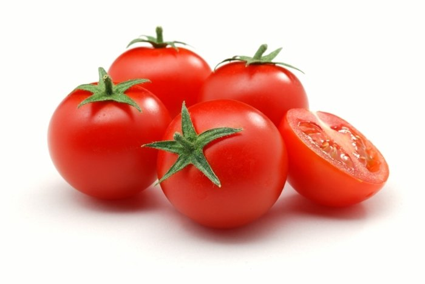

특징
효능
주문하기
상품정보
방울 토마토

생산된 방울 토마토
특징
맞이 달고 진함
크기가 작고 귀여워서 아이들도 좋아함
건강한 성분이 많이 함유됨
다양한 요리나 음료에도 사용 가능
효능
항산화 작용
으로 노화 방지에 좋다.
칼슘 함량
이 높아서 혈압 조절에 좋다.
비타민 C 함량
이 높아서 면연력 향상에도 좋다.
체내 독소 제거와 간 기능 개선
에도 효과가 있다.
주문하기
방울 토마토는
3kg에 2만원
입니다. 주문하시려면 아래 링크를 클릭해주세요.
주문하기
상품정보
상품정보
12345